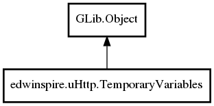

edwinspire.uHttp.TemporaryVariables Reference Manual
Packages
libspire_uhttp
edwinspire
uHttp
TemporaryVariables
TemporaryVariables
get_value
set_value
set_value_random_name
TemporaryVariables
Object Hierarchy:

Description:
public
class
TemporaryVariables
:
Object
Namespace:
edwinspire.uHttp
Package:
libspire_uhttp
Content:
Creation methods:
public
TemporaryVariables
()
Methods:
public
void
set_value
(
string
n,
string
v,
int
t =
10
)
public
string
get_value
(
string
n)
public
string
set_value_random_name
(
string
v,
int
t =
10
)